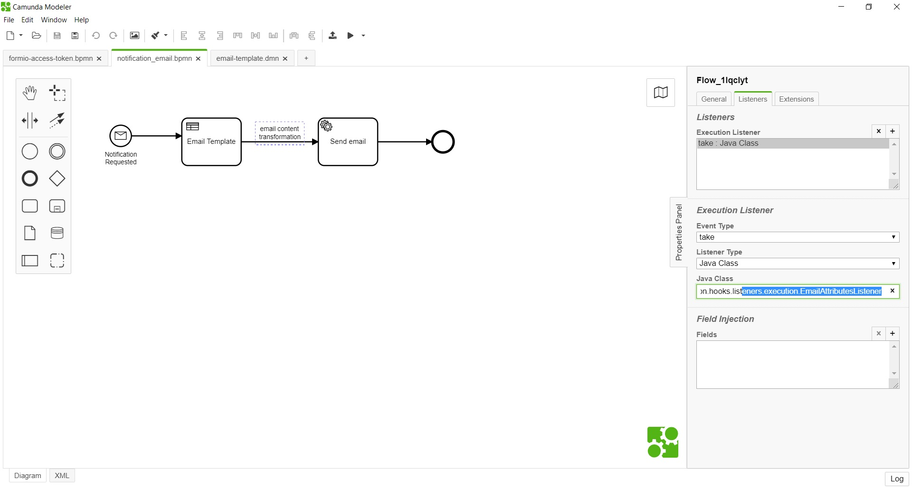

<article class="docs-article">
    <section class="docs-section" id="listeners">
        <div>
            <h2 id="email-attributes-listener">Email Attributes Listener</h2>
            <p><strong>org.camunda.bpm.extension.hooks.listeners.execution.EmailAttributesListener</strong>
            </p>
            <p>This component intended to run <strong>ONLY</strong> with the process
                <strong>notification_email.bpmn</strong> &amp; &quot;email-template.dmn&quot; or any
                similar
                notification processes.
                It replaces all reserved identifier <strong>@{variable}</strong> with values in
                email body.
            </p>
            <h3 id="table-of-content">Table of Content</h3>
            <ul>
                <li><a href="#type">Type</a></li>
                <li><a href="#how-it-works">How it Works</a></li>
                <li><a href="#how-to-use">How to Use</a></li>
            </ul>
            <h4 id="type">Type</h4>
            <p>Execution Listener</p>
            <h4 id="how-it-works">How it Works</h4>
            <p>The listener is configured on the navigation path between email-template.dmn and
                email connector.
                On execution, the email body output from the DMN is transformed with values.</p>
            <h4 id="how-to-use">How to Use</h4>
            <p>Below snapshot shows how <strong>EmailAttributesListener</strong> is used in process
                <strong>notification_email.bpmn</strong>
            </p>
            <p></p>
            <br><br>
            Click here <a href="External Submission Listener.html">External Submission Listener</a>
        </div>
        </section>
        </article>